Andrew Ng’s Machine Learning Specialization: My Machine Learning Foundations Notes
These notes are compiled from my course records left behind when I studied Andrew Ng's Machine Learning Specialization two years ago. Looking back after two years, it remains an excellent introductory machine learning course for beginners: starting with linear regression and Gradient Descent, it progresses step-by-step to classification, neural networks, model diagnostics, unsupervised learning, recommendation systems, and reinforcement learning. If you want to systematically fill in your machine learning foundations, I still strongly recommend completing this entire course.
Course Main Line: Choose a learning method → Define an objective function to measure performance → Use optimization algorithms to adjust parameters → Validate on data not used in training → Decide the next step based on errors.
The Big Picture: What Does Machine Learning Learn?
Different algorithms may look very different, but they all revolve around the same question: can a system extract patterns from experience and apply those patterns to new inputs? The main difference lies in the form the experience takes.
Supervised Learning
Training data contains both inputs x and targets y. Regression predicts continuous values, while classification predicts categories or probabilities.
Unsupervised Learning
Only inputs x are provided; the system finds clusters, anomalies, or more compact representations on its own.
Reinforcement Learning
An agent interacts with an environment, learning through rewards which actions to take in different states.
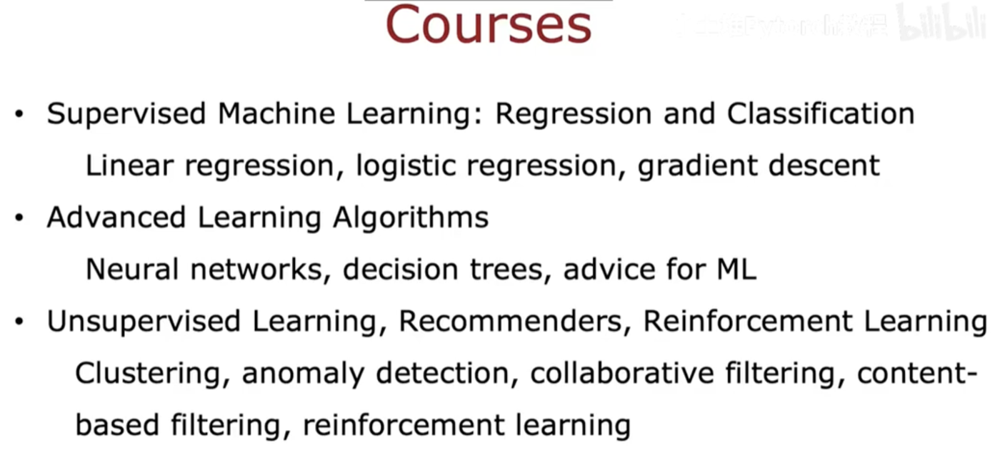
To understand all the algorithms that follow, it is best to start with linear regression, as it fully demonstrates the most fundamental learning chain: “model—error—optimization.”
Linear Regression and Gradient Descent: The First Complete Learning Loop
Linear regression predicts continuous values from input features. With a single feature, the model is f(x)=wx+b: w controls the slope, and b controls the vertical shift. With multiple features, both x and w become vectors:
Here, n represents the number of input features, not the number of outputs. For example, area, number of bedrooms, and house age are three features, but the model still predicts only one house price.
What are Loss, Cost, and Gradient?
Loss measures how poorly a single sample is predicted; Cost J aggregates the Loss over the entire training set; Gradient is the partial derivative of Cost with respect to the parameters, indicating the direction and rate at which Cost changes when parameters are slightly adjusted.
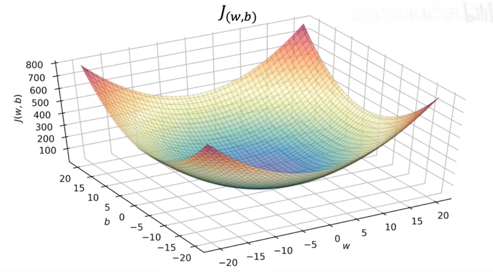
What is Gradient Descent?
Gradient Descent is an optimization algorithm that iteratively adjusts parameters to gradually reduce Cost. A positive derivative indicates that increasing the parameter further will increase Cost, so the update should move in the negative direction; a negative derivative implies the opposite. The Learning rate α determines the step size for each update.
w and b should be updated simultaneously using the gradients calculated in the same iteration. If α is too small, convergence will be very slow; if it is too large, the algorithm may overshoot the minimum, oscillate, or even diverge.
Interactive | Adjust w and b Yourself
Drag the parameters to bring the blue line closer to the data points; Cost J will update in real time. You can also let Gradient Descent take one automatic step.
Gradient Descent Formulas in Different Models
| Scenario | Gradient and Update | What Changes |
|---|---|---|
| Single-feature Linear Regression | dw=(1/m)Σ(f−y)xdb=(1/m)Σ(f−y) | The model is a straight line, and Loss is MSE. |
| Multi-feature Linear Regression | dwⱼ=(1/m)Σ(f−y)xⱼUpdate each feature weight separately | The same error is distributed to different weights based on their feature values. |
| Logistic Regression | dwⱼ=(1/m)Σ(ŷ−y)xⱼdb=(1/m)Σ(ŷ−y) | The form is similar, but ŷ=sigmoid(w·x+b), and Loss is Cross-Entropy. |
| With L2 Regularization | dwⱼ=data_gradient+(λ/m)wⱼ | Additionally pulls excessively large w values toward 0; b is typically not regularized. |
| Neural Network | Wˡ := Wˡ−α∂J/∂Wˡbˡ := bˡ−α∂J/∂bˡ | Backpropagation uses the chain rule to calculate gradients for matrix parameters in each layer. |
| Mini-batch Gradient Descent | Estimates gradients only on the current mini-batch B | Each calculation is cheaper, but gradients are noisier; one epoch contains multiple batches. |
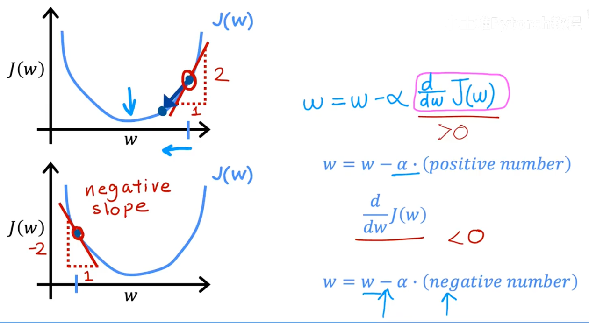
Making Gradient Descent Converge More Easily
Multi-feature inputs are typically written as f(x)=w·x+b, using Vectorization to perform matrix operations in one go. If area is in the thousands while the number of bedrooms is single-digit, Gradient Descent will oscillate back and forth within narrow, elongated contours; Feature Scaling methods like Z-score normalization bring different features into comparable ranges. During training, also monitor the Learning curve: Cost should generally decrease and gradually flatten out.
Logistic Regression: From Continuous Prediction to Classification Probability
The goal of a classification problem is not to predict an arbitrary numerical value, but to determine a class. For example, in spam detection, y=1 indicates spam, and y=0 indicates a normal email. Logistic Regression first calculates z=w·x+b, then maps it to the range 0 to 1 using the Sigmoid function:
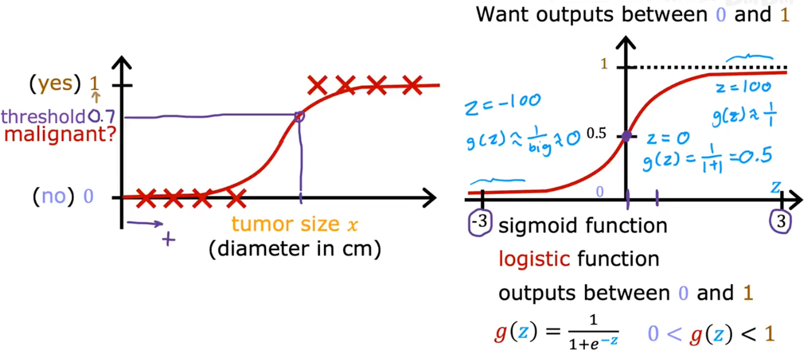
Interactive | Logit, Probability, and Classification Threshold
Changing z moves the point on the Sigmoid curve; changing the threshold only alters the final decision, not the probability output by the model.
Why Not Use Standard MSE for Classification?
Binary classification typically uses Binary Cross-Entropy. It heavily penalizes cases where the model is "very confident but wrong," and combined with the Sigmoid function, it forms an objective suitable for probabilistic classification:
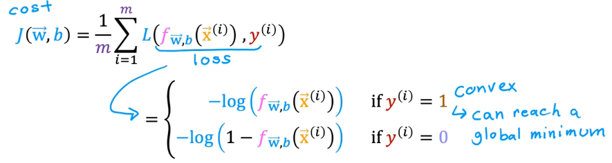
The update form of Gradient Descent looks similar to that of linear regression, but since the prediction function and Loss are different, the resulting gradients have different meanings.
From Training Fit to Generalization
Underfitting means the model has not even learned the main patterns in the training data, typically corresponding to High Bias; Overfitting means the model has memorized accidental noise in the training data, typically corresponding to High Variance.
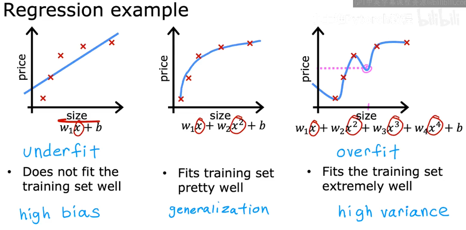
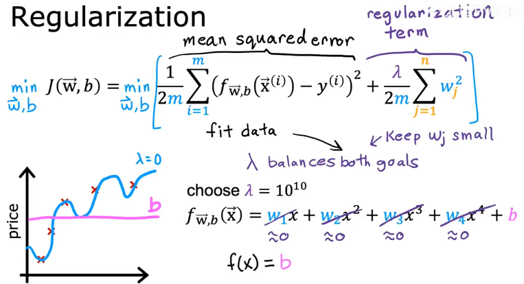
(λ/2m)Σwⱼ² to the Cost, suppressing excessively large weights.λ=0 does not necessarily lead to overfitting; it simply means no regularization is applied at all. If λ is too large, it may suppress weights too much, making the model overly simple. Besides regularization, using more training data, reducing unnecessary features, and data augmentation can also improve generalization; the specific choice depends on diagnosis.
Advanced Supervised Learning Methods: Neural Network and Decision Tree
Basic Components of a Neural Network
A neuron receives multiple inputs, computes z=w·x+b, and then produces an output via an Activation Function. Multiple neurons form a Layer; layers located between the input and output are called Hidden Layers.
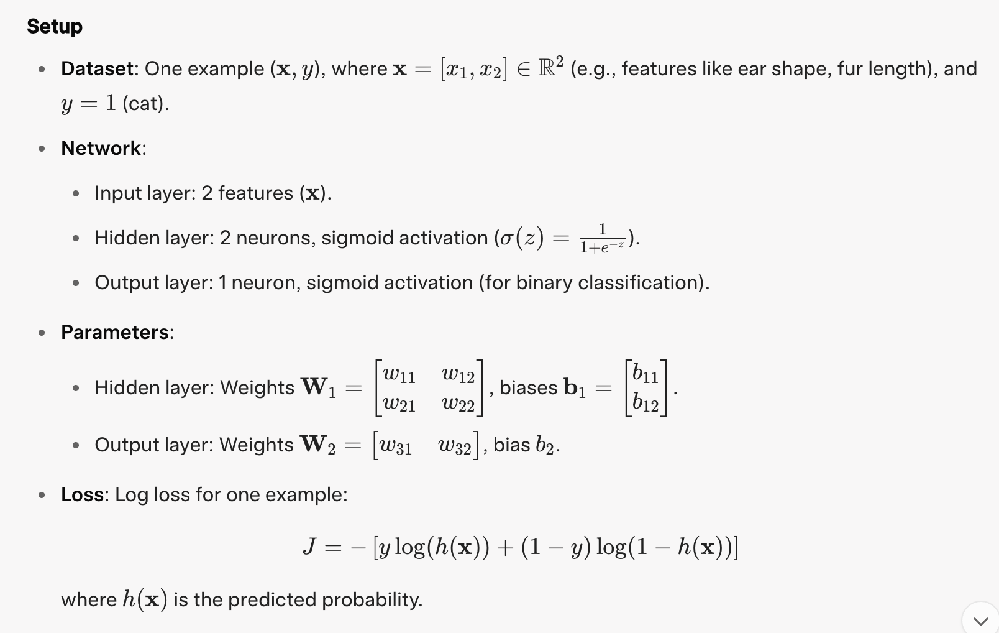
Forward propagation computes from input to output layer by layer; Loss measures the prediction; Backpropagation uses the Chain Rule to calculate the gradients of W and b for each layer from back to front. Training frameworks handle automatic differentiation, but Batch, Epoch, Activation, Loss, and parameter matrices remain the foundation for understanding networks.
Basic Components of a Decision Tree
A Decision Tree does not perform continuous transformations through layers and weights; instead, it continuously poses conditional questions. The Root node is the starting point, a Decision node branches based on a specific feature, and a Leaf node provides the final class or predicted value.
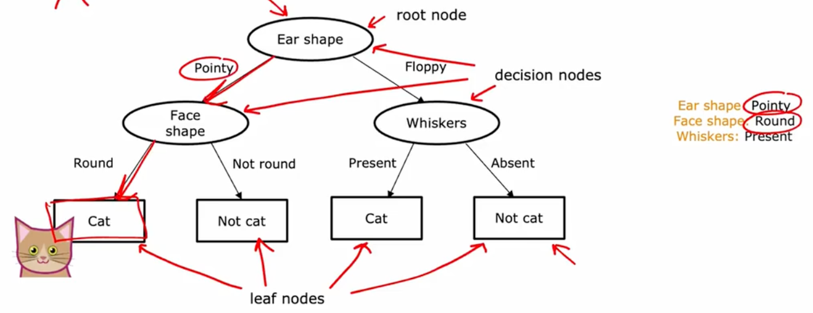
Each node must select "which feature to use and at which threshold to split." Classification trees commonly use Entropy to measure impurity and select the split with the maximum Information Gain; regression trees typically select the split that most significantly reduces weighted variance.
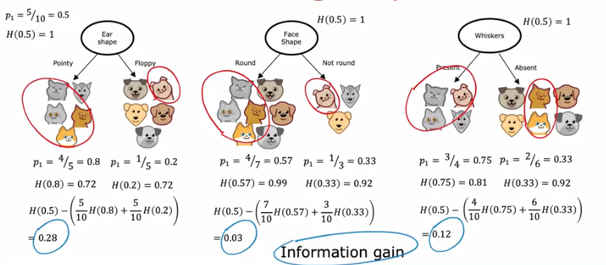
A tree can stop growing when nodes are pure, maximum depth is reached, there are too few samples, or the gain is too small. Trees that are too deep are prone to overfitting; limiting depth, minimum samples per leaf, etc., are equivalent to controlling model complexity.
Tree Ensembles: Why Are Many Trees More Stable?
Random Forest performs sampling with replacement on the training data and allows each node to select splits only from a random subset of features, creating diverse trees that finally vote or average. Boosting / XGBoost trains new trees sequentially, focusing subsequent trees on correcting samples that previous trees still misclassified.
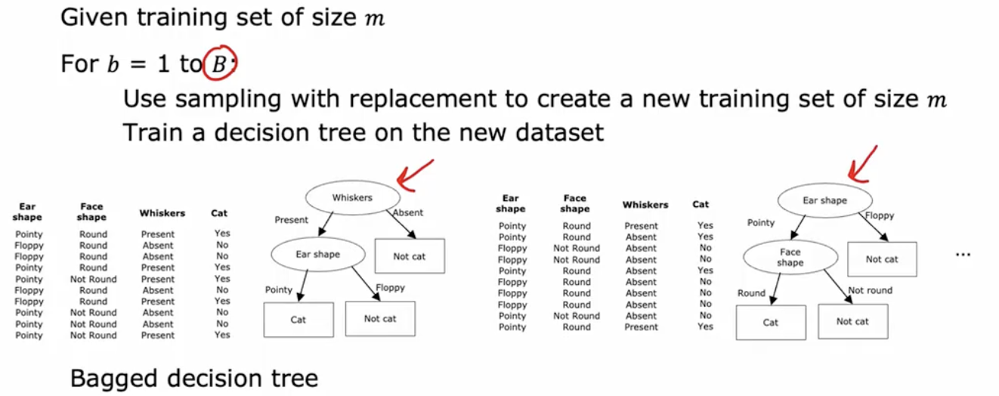
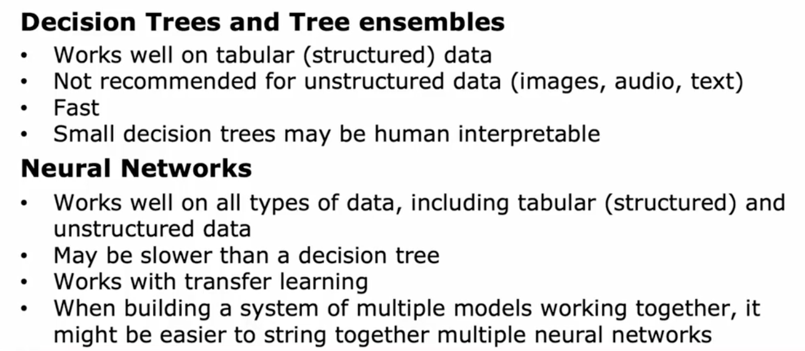
ML Diagnostics: First, Identify Where the Problem Lies
Train, Cross-validation, and Test Sets
Training Set
Used to calculate Loss, Gradient, and fit parameters. The model sees these samples repeatedly.
Cross-validation Set
Used to select model structure, regularization λ, thresholds, and other hyperparameters. Also known as the Validation or Dev set.
Test Set
Used to evaluate final generalization performance after all selections are complete. It should be used only at the very end.
If you repeatedly modify the model based on Test results, the Test set is indirectly "trained" as well, and the score no longer represents truly unseen data. Steps like Normalization and feature selection must also be fitted using only the Training set and then applied to the CV and Test sets to avoid Data Leakage.
Bias and Variance
Compare the error against a reasonable Baseline (such as human performance or simple rules): If the Training error is already high, it is usually High Bias; if the Training error is low but the CV error is significantly higher, it is usually High Variance.
Interactive | How Does Complexity Affect Training and Validation Error?
As model complexity increases, Training error typically continues to decrease, while CV error may initially decrease and then increase.
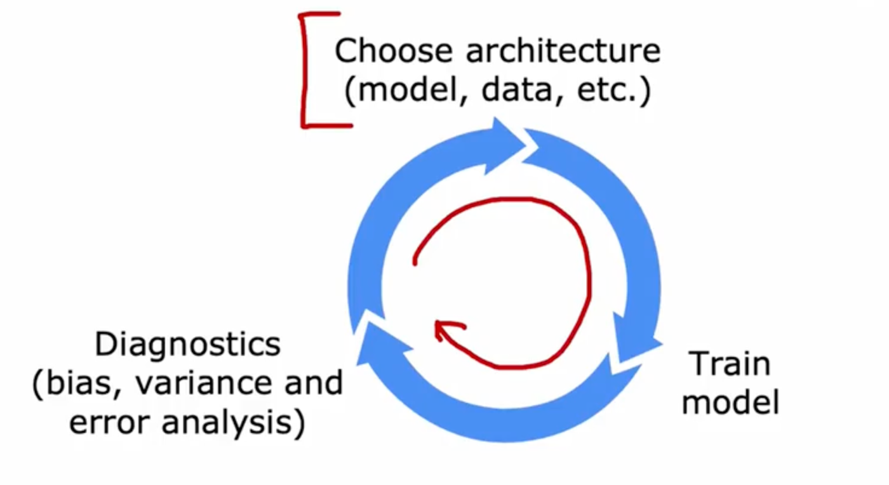
Moving from Accuracy to Precision, Recall, and F1
Train / CV / Test addresses "which data to use for evaluation"; next, you must decide "which metric to use for evaluation." When classes are balanced, Accuracy is easy to understand, but in extremely imbalanced scenarios like fraud detection, Accuracy can be high even if the model always predicts "normal."
| Concept | Meaning | Formula |
|---|---|---|
| TP | Predicted positive, actually positive | Correctly identified positives |
| FP | Predicted positive, actually negative | False alarms |
| FN | Predicted negative, actually positive | Missed detections |
| Precision | Of the samples predicted as positive, how many are actually positive | TP/(TP+FP) |
| Recall | Of all actual positives, how many were retrieved | TP/(TP+FN) |
| F1 | Harmonic mean of Precision and Recall | 2PR/(P+R) |
Classification models first output probabilities, then use a Threshold to determine the class. Raising the Threshold makes the model more cautious about predicting positives, typically reducing FP and increasing Precision, but it will also miss more positives and lower Recall.
Interactive | How Does the Threshold Change Precision and Recall?
Below is a fixed set of prediction scores. Drag the threshold to observe how TP, FP, FN, and the three metrics change simultaneously.
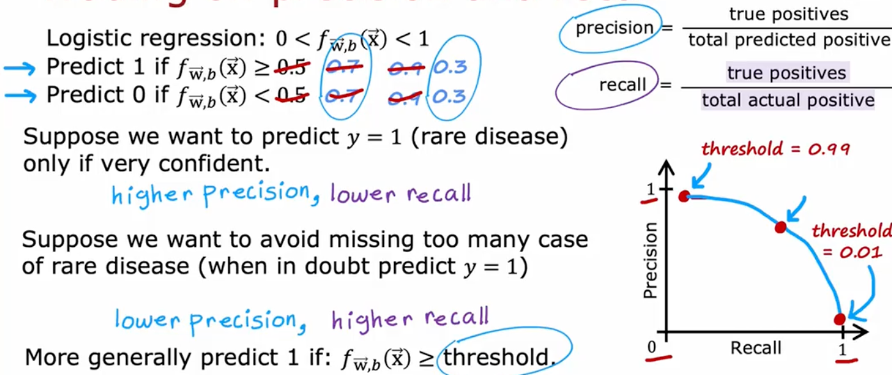
Unsupervised Learning: Finding Structure Without Labels
K-means Clustering
Clustering inputs do not have correct classes. K-means requires specifying K groups in advance and maintaining a Centroid for each group. The algorithm repeatedly performs two steps: assigning each sample to the nearest center, and then moving the center to the average position of the samples in that group.
Lower Distortion means samples are generally closer to their assigned centers, but larger K values naturally make it easier to reduce Distortion. Therefore, K should not be determined solely by the lowest Cost; business needs must also be considered. The Elbow method is only a reference, and the elbow point may not be obvious.
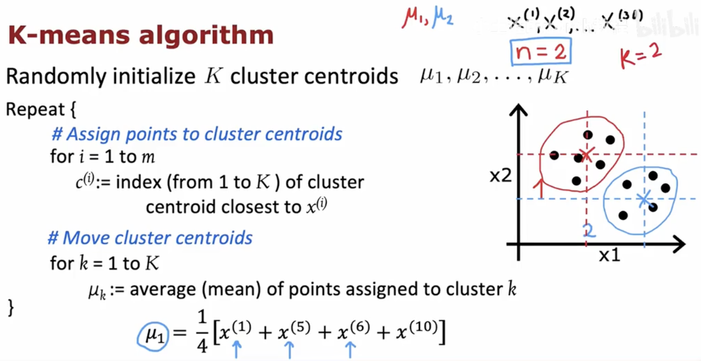
Interactive | Seeing the Two Actions of K-means
Hollow circles with × are Centroids. Click "Randomly place two centers," then alternate between assigning and moving; blue and orange colors indicate the current assignment of samples.
Anomaly Detection
Anomaly detection does not involve learning every type of anomaly first; instead, it estimates the probability distribution of normal data. Estimate the mean μ and variance σ² for each feature, and combine them to get p(x); if the density of a new sample is below the threshold ε, it is marked as an anomaly. ε should be selected on a CV set with a small number of labels.
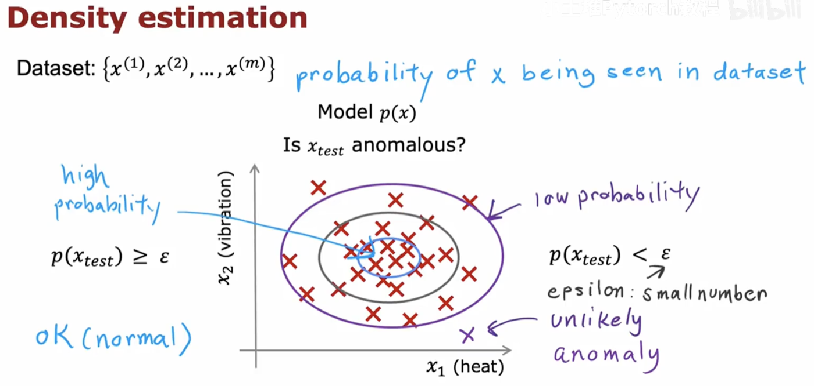
Recommendation Systems and PCA: Learning Representations from Interactions
What Do Recommendation Systems Predict?
Recommendation systems often predict "how much a specific user will like a specific item." Inputs can be ratings or implicit feedback such as clicks, favorites, views, or purchases. The difficulty lies in the fact that users have only interacted with a tiny fraction of items, leaving most positions in the User–Item Matrix empty.
Collaborative Filtering
Collaborative Filtering does not require manually defining all item features. It simultaneously learns user vectors vᵤ and item vectors vₘ, ensuring that their dot product approximates known ratings:
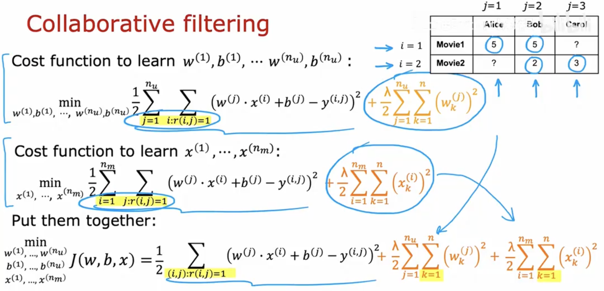
It relies on group interactions, so new users or new items with little history will encounter the Cold Start problem.
Content-based Filtering and Two-tower Models
Content-based filtering uses user attributes and item attributes. Two Neural Networks separately encode user features and item features into the same vector space, then score them based on similarity. It can leverage information such as text and categories for new items to mitigate Cold Start.
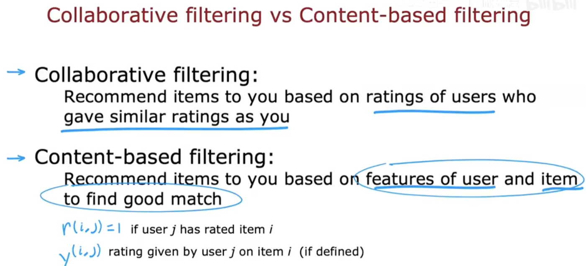
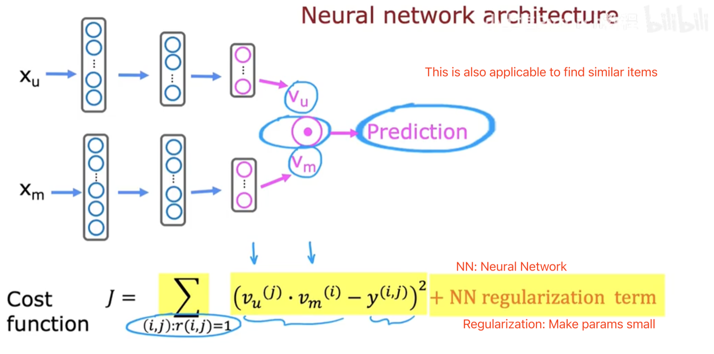
When facing a large-scale Catalog, it is common to first use lightweight methods for Retrieval to generate hundreds of candidates, then use richer features for Ranking. Offline evaluation can use metrics like Precision@K and Recall@K, but online systems must also monitor clicks, conversions, diversity, and long-term satisfaction.
PCA: Why Learn It Alongside Recommendation Systems?
Both involve vector representations, but their goals differ. PCA does not predict ratings; instead, it finds the orthogonal directions of maximum data variance and projects high-dimensional data into fewer dimensions. The first Principal Component retains the most variance, while subsequent principal components continue to retain remaining variation under the condition of being orthogonal to previous ones.
Feature Scaling is usually required before using PCA; otherwise, features with large numerical ranges will dominate the directions. Dimensionality reduction results in information loss, so one should check the Explained Variance rather than assuming that lower dimensions are always better.
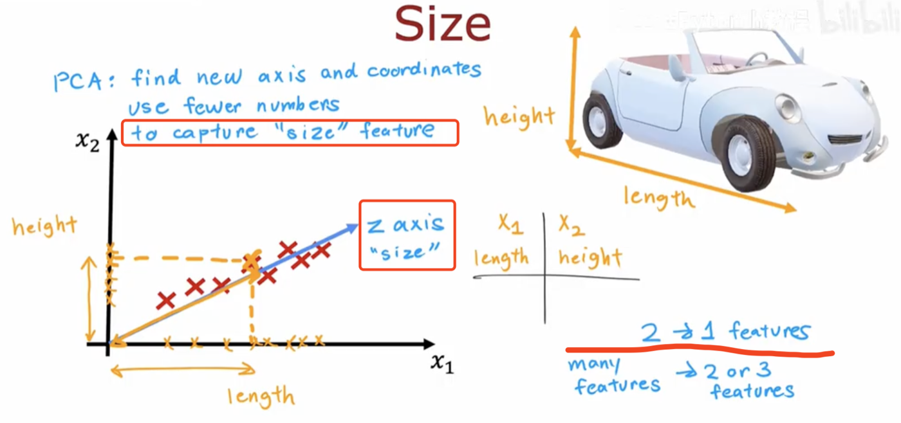
Interactive | Rotate the Projection Axis and Observe Retained Variance
Adjust the angle of the axis, and points will be projected onto this line. The greater the variance after projection, the better this axis preserves the main variation in the data.
Reinforcement Learning: From Prediction to Continuous Decision-Making
First, Meet the Six Basic Elements
State
The state of the environment at the current moment, such as the position and velocity of a lander.
Action
An action the Agent can take, such as moving left, moving right, or firing the engine.
Reward
Immediate feedback from the environment regarding the outcome; it is not equivalent to the long-term goal.
Policy π(a|s)
The rule or probability distribution for selecting actions given state s.
Episode
A complete interaction trajectory from the initial state to the end of the task.
Return
The discounted sum of future rewards starting from the current moment.
The Markov Property assumption in an MDP: given the current State, predicting the future does not require the complete history. The goal is to find the Policy that maximizes the Expected Return.
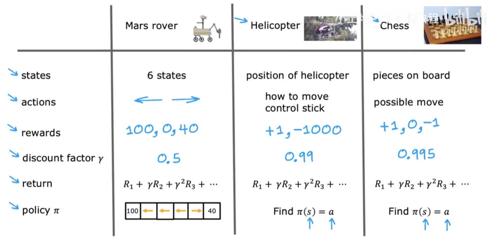
Interactive | How does γ change the Return?
Assume the reward sequence is [0, 2, 0, 10]. The smaller γ is, the more weight is given to immediate rewards; the closer γ is to 1, the greater the impact of distant future rewards.
State-action Value Function: What exactly does Q(s,a) represent?
The State-action Value Function is commonly abbreviated as the Q-function. It answers a very specific question:
The value of Q(s,a) depends on the Policy adopted thereafter; Q*(s,a) (the Optimal Q-function) represents the highest Expected Return achievable from this step onward if optimal choices are made consistently. If Q* is known, the optimal Policy is straightforward:
| Current State | Available Actions | Hypothetical Q Values |
|---|---|---|
| Lander is above the platform, descending rapidly | Do nothing | Q(s, nothing) = 2 |
| Move left | Q(s, left) = 1 | |
| Fire main engine | Q(s, main) = 8 | |
| Move right | Q(s, right) = 0 |
In this example, the Agent will choose "Fire main engine." Q is not "how many points this action gets immediately," but rather calculates the impact of this action on the entire future trajectory.
Bellman Equation: Breaking Down Long-Term Value into One Step
The final Return for complex tasks may only be known much later. The Bellman Equation provides a recursive relationship: the value of an action equals the immediate Reward received now plus the best future value obtainable from the next State.
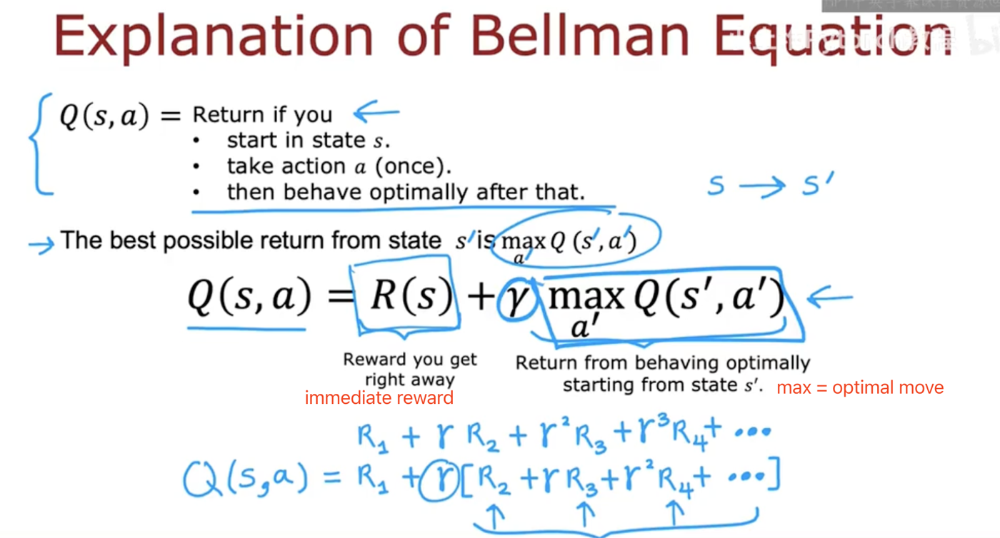
Assume that after taking an action, an immediate r=2 is received, entering a new state s′; in s′, the best action value is 8, and the discount factor is γ=0.9. Then, the target that the current action should approach is: y = 2 + 0.9×8 = 9.2.
Deep Reinforcement Learning: Approximating Q* with a Neural Network
When there are few states, a Q-table can store a number for each (s,a). However, continuous States such as images, positions, and velocities have nearly infinite combinations, making tables impossible to exhaust. DQN (Deep Q-Network) therefore uses a Neural Network as a Q-function approximator:
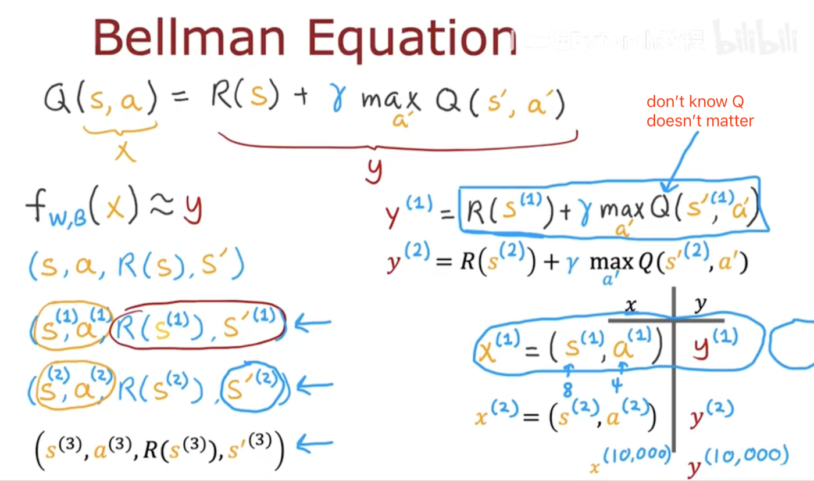
How does DQN "learn" Q values?
Initially, the Q values output by the Neural Network are almost random. The environment does not provide the correct Q directly; it only provides a single interaction result (s,a,r,s′). DQN uses the Bellman Equation to construct a temporary learning target:
The main network's prediction for the recent action is Q_online(s,a). The difference between the two forms the Temporal-Difference error, and it is trained using Squared Error, similar to supervised learning:
Interactive | See what a single DQN parameter update does
Adjust the immediate reward, γ, the best Q of the next state, and the main network's current prediction. Click to train for one step and observe the prediction value moving closer to the TD target.
| One Step of DQN Training | What Happens |
|---|---|
| 1. Interact with environment | Select an action based on ε-greedy, obtaining (s,a,r,s′). |
| 2. Store in Replay Buffer | Save the transition for repeated sampling and learning later. |
| 3. Randomly sample Mini-batch | Break the correlation of consecutive experiences to improve data reuse. |
| 4. Online Network Forward | Calculate Q_online(s,a). |
| 5. Target Network Forward | Calculate max Q_target(s′,a′) for the next state to construct y; y is treated as a fixed target during this update. |
| 6. Loss + Backprop | Calculate the difference between predicted Q and y, updating the Online Network weights. |
| 7. Update Target Network | Periodically copy or slowly follow the Online Network using Soft Update. |
Why are three stabilization mechanisms still needed?
Experience Replay
Consecutive transitions are highly correlated. Random sampling shuffles the order and allows the same experience to be used multiple times.
Target Network
If both the prediction and the training target are generated by the same rapidly changing network, the target will keep moving, causing training to oscillate easily.
ε-greedy
Only selecting the current maximum Q will miss better actions; retaining a probability ε for random exploration balances Exploration and Exploitation.
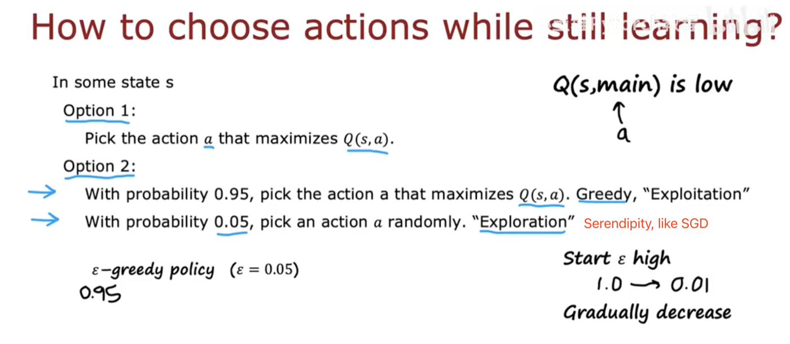